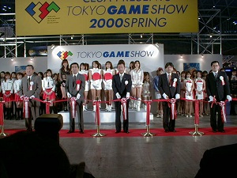
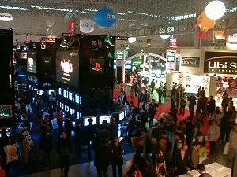
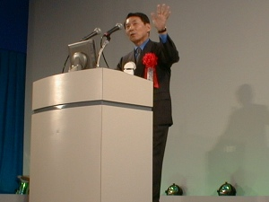
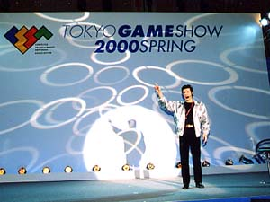
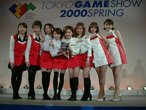
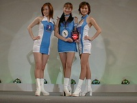
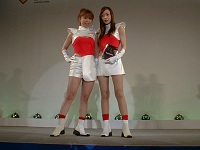

3月31日（金）、「東京ゲームショウ2000春」が幕張メッセで開幕しました。本日31日は業界関係者に向けた「ビジネスデー」、4月1日、2日は「一般公開日」です。
開会式では、まず社団法人コンピュータエンターテインメントソフトウェア協会・上月景正会長から、「新しい世紀の入口・2000年の開催を迎えて、東京ゲームショウも新たにバージョンアップ。フレッシュでインパクトあるソフトウェアを、ここ東京から世界に発信していきます」と開会の挨拶。
そして通商産業省機械情報産業局長 太田信一郎氏の来賓挨拶に続いて、CESA 北上一三 東京ゲームショウ実行委員長の開会宣言と、テープカットが行われました。

東京発の夢を世界へ向けて、いまテープカット
今開催での出展は66社、総出展小間数は1295小間。開会日は早くも熱心な来場者が押し寄せ、ビジネスデーながら熱気が充満。外国からの来場者も目立ち、東京ゲームショウに対する世界の注目を感じさせました。

次世代エンターテインメントへの期待にわく会場
午前のイベントステージでは、株式会社セガ・エンタープライゼス代表取締役社長 入交昭一郎氏による基調講演が行われました。
ドリームキャストを擁してネットワーク・ゲームに多大な実績を持つ同社ですが、入交社長は現在のネットの遅さ、帯域幅の狭さを指摘。さらに質の高いサービスをユーザに届けるため、まずはネットワークインフラを整備。その基盤の上でコンテンツやソフトウェアとコミュニケーションの楽しみを総合し、新しいコミュニティ作りを目指すという壮大な構想を披露しました。

「ネットワーク・ゲームも次のレベルへ」とセガ・入交社長
午後のイベントステージでは、CESAが運営するゲーム総合サイト「CESA GAME.COM」の「Online プロモーション」が行われました。
エニックス、カプコン、ジーパラ ドット コム、ハドソン、ボーステックの各社が参加し、「CESA GAME.COM」の概要と今後の展開をホットに紹介しました。

合い言葉は「ネットでLET'S PLAY」
毎回好評、ビジネスデーのコンパニオン・コスチュームコンテスト「ベストコスチューム in TOKYO GAME SHOW 2000 SPRING」がイベントステージで開かれました。今回のエントリーは9社、新世紀の幕開けと春の訪れを感じさせる華やかな競演となりました。
そして『電撃』7誌統括編集長・塚田正晃氏ら3氏の評価に、会場の投票をも加味した審査の結果、栄えのグランプリはコナミ、準グランプリはNECインターチャネルが獲得しました。

グランプリに輝いたコナミ

準グランプリのNECインターチャネル
|

審査員特別賞のナムコ
|
また本日は「教育機関のための第5回人材育成シンポジウム」、「知的財産シンポジウム〜インターネット上での著作権に対する違法行為及び現在の中古ソフト問題について」等のCESA主催イベントも併催され、盛況のうちに第1日目を終了しました。来場者数は18,803人でした。
4月1日（土）、2日（日）はいよいよ一般公開。皆様、ぜひ東京ゲームショウへお越しください。